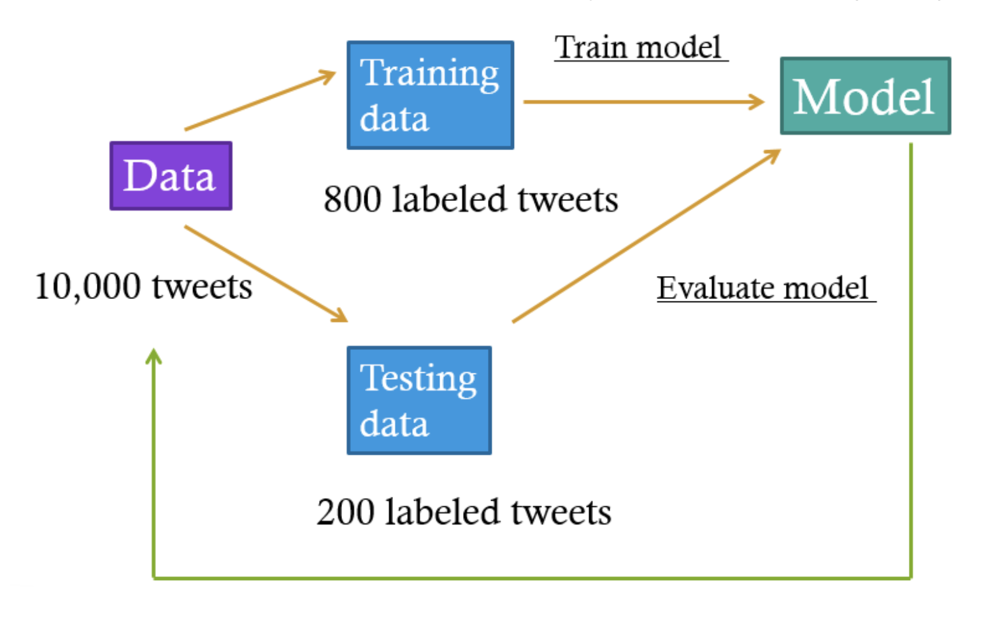

Q: I do not have a computational background, can I use your system?
Absolutely! If you follow the instructions, you should be all set. The system is specifically
designed to be usable for researchers without computational backgrounds. But we do recommend you read research
papers about the applications of the computational methods used here in the fields of journalism and communication
research. See the recommended readings below.
Q: Do you have any suggested research papers about the methods used in this project?
Topic modeling
Guo, L., Vargo, C., Pan, Z., Ding, W., Ishwar, P. (2016). Big social data analytics in journalism and mass
communication: Comparing dictionary-based text analysis and unsupervised topic modeling.
Journalism & Mass Communication Quarterly, 93(2), 332-359.
Guo, L. (2019). Ignorance or uncertainty: How the "black box" dilemma in big data research may "misinform"
political communication. In N. Stroud & S. McGregor (Eds), Digital discussions: How big data informs
political communication. New York: Routledge.
BERT
Akyürek, A. F., Guo, L., Elanwar, R., Ishwar, P., Betke, M., & Wijaya, D. (2020). Multi-label and
multilingual news framing analysis. Proceedings of the 58th Annual Meeting of the Association for
Computational Linguistics, 8614-8624.
Guo, L., Mays, K., Zhang, Y., Wijaya, D. & Betke, M. (forthcoming). What makes gun violence a (less)
prominent issue? A computational analysis of compelling arguments and selective agenda setting.
Mass Communication & Society.
Q: What is the difference between unsupervised and supervised machine learning?
Supervised machine learning involves user input on the dataset. The user says to the computer, "I have a
pattern that I want you to understand. Here are some examples of that pattern." and the computer discovers
the pattern involved as best it can.
Unsupervised machine learning does not involve user input on the dataset. The user wants to discover patterns
in the dataset at a scale or level of complexity that may not be easy for humans to perceive, but they do not
tell the computer what those patterns are. Instead, the computer tells the user what patterns it discovers.
The LDA topic modeling approach is an example of unsupervised machine learning.
Q: What is deep learning?
FILL LATER
Is there a requirement for the data types? Can I use your system to analyze tweets?
Absolutely! Keep in mind that longer documents tend to be easier to analyze for computers (and, often, humans),
but analyzing tweets is quite doable for the models we have implemented here.
Q: What is media framing?
In communication research, to frame is "to select some aspects of a perceived reality and make them more
salient in a communicating text" (Entman, 1993, p. 52). Like any type of communication, news involves framing.
Ideology of a society, ownership of a news organization, media routine, as well as individual media worker's
preference all play some role, consciously or not, in shaping the news content (Shoemaker & Reese, 1996).
Q: How to conduct a framing analysis?
Communication researchers have developed a variety of approaches to analyze media framing. One popular
quantitative approach is to first identify a list of frames and then manually classify news articles into
one of the identified frames. Only a certain number of frames are common in the news coverage because one can
frame an issue in multiple ways, but a frame must be shared on some level for it to be communicable and
effective (Reese, 2001). Therefore, journalists often use generic frames in their reporting across a
diverse range of issues, such as human interest, conflict, attribution of responsibility, and economic
consequences (Neuman, Just, & Crigler, 1992; Nisbet, 2010; Semetko & Valkenburg, 2000). Regarding any
particular issue, journalists also apply issue-specific frames. For example, science reporters often use
benefit- and risk-driven frames to help their audience understand complicated scientific issues such as
genetically modified organisms (Wang & Guo, 2018). The goal of framing analysis is to identify both
generic and issue-specific frames.
Q: How long will it take to complete the analysis?
The larger your dataset, the more time it will need. Our current hardware requires a little longer than 30
minutes to train on 1100 documents. Generally, the proportionality is linear(ie, you can double the time
required for double the number of documents).
Q: What if I want to make some changes to the topic modeling and/or the BERT algorithms?
You may choose to customize some parameters through our web-based system (e.g., the number of the LDA topics).
In order to further fine-tune the algorithms, you will need to have some programming experience
and our codes can be found on our Github page.
Q: Your system is called OpenFraming. Can I use your system to do other types of analysis, e.g., sentiment detection?
There are multiple ways to use our system.
You can choose to follow the recommended five steps to conduct a framing analysis.
You can choose to follow the recommended five steps to conduct a framing analysis.
You can use our LDA topic modeling tool (Step 1) to conduct a topic modeling analysis of any issue of your interest.
If you have a labeled dataset to begin with (the labels can be frames, sentiment, topics, etc.),
you can use our tool to train a BERT-based classifier (Step 4).
We also provide four trained BERT-based classifiers on issues of gun violence, immigration, tobacco, and
same-sex marriage. If you are also interested in one of these issues and you have relevant textual data,
you can use our existing classifiers (Step 5) to predict media frames for your data.
LDA topic modeling (Step 1)
Q: What is LDA topic modeling?
FILL LATER
Q: What do you mean by a "document"?
A document is a single unit of text - a standalone entity. Examples of documents include news articles, tweets, and paragraphs.
Q: Is there a requirement for the minimum and maximum length of each document?
The size of a document can vary, but it has to be reasonably large. A typical document is about the size of a
news article, a paragraph, or a tweet (~280 characters). Single words or phrases will not yield a productive
analysis. Longer documents (a corpus of books, for example) can be analyzed, but our system may take a very
long time to handle the load.
Q: What is the minimum and maximum number of documents I should upload?
There is no absolute cutoff. Since LDA is an unsupervised method whose goal of "topic discovery" is relatively
vague, the minimum number of documents, and the number of topics to use depends on your end goal. As a
reference point, running LDA modeling on 50,000 general news headline datasets with 7-9 topics yields clearly
distinct and recognizable topics that correspond to the typical news taxonomy(ie, war politics, sports, public
safety, natural disasters, .. etc).
The maximum number of examples is determined by the maximum upload size the server currently accepts, which is
10MB. The longer each document, the smaller the total number of documents allowed. For example, 10MB is
equivalent to about 250,000 news headlines.
Q: What is a LDA "topic"? Is it equivalent to "frame"?
An LDA topic is not equivalent to a frame. Topics don't necessarily correspond to a way of talking about or
understanding an issue; they might instead correspond to different events that are covered as part of the issue.
We recommend you use the LDA topic modeling results to understand your data and help you decide what frames to
be included in the analysis. Oftentimes, the LDA topic modeling analysis can help you discover potential issue-specific frames.
Build a BERT classifier to predict frames (Step 4-5)
Q: What is BERT?
Bidirectional Encoder Representations from Transformers (BERT) is a Transformer-based machine learning
technique for natural language processing (NLP) pre-training developed by Google. It is pre-trained on a
large corpus of Wikipedia articles and books, and learns vector representations of words taking into account
the context for each occurrence of a given word. For instance, whereas the vector for "running" will have the
same word2vec vector representation for both of its occurrences in the sentences "He is running a company"
and "He is running a marathon", BERT will provide a contextualized embedding that will be different according
to the sentence. The contextualized embeddings for a sentence can then be used as features for any text
classification task. BERT itself can be fine-tuned on the target task so it learns embeddings that are useful
for the task, for example for our news framing classification task.
Q: What do you mean by a "document"?
A document is a single unit of text - a standalone entity. Examples of documents include news articles, tweets, and paragraphs.
Q: Is there a requirement for the minimum and maximum length of each document?
The size of a document can vary, but it has to be reasonably large. A typical document is about the size of a
news article, a paragraph, or a tweet (~280 characters). Single words or phrases will not yield a productive
analysis. Longer documents (a corpus of books, for example) can be analyzed, but by design BERT can only take
at most 512 words as input. Generally, vector representation learning of longer texts remain an open research
problem in NLP since language has long distance dependency but current models are still limited in the
amount/length of context they can represent.
Q: How many labeled documents should I provide?
This is not an easy question to answer as it depends on how hard the task is from a deep learning perspective,
and how much performance is needed. The rule of thumb in deep learning is, the more the merrier. As a reference
point however, you can keep in mind that on the Gun Violence Frames Corpus, using around 1300 documents,
we obtain 82-84% accuracy to classify 9 frames.
Q: What do you mean by a training and a testing set?
In supervised machine learning, we should evaluate the performance of the trained model before we decide to
use it. To that end, we usually will divide all the labeled documents into a training set and a testing set.
A training set is the dataset the model uses to learn the pattern it is supposed to understand. A testing set
is the dataset that the model uses to figure out how well it has learned this pattern.
Let's say our goal is to predict the frames of a sample of 10,000 tweets. We will first draw a sample of 1000
tweets and manually label them. Then we will divide the 1,000 labeled tweets into a training set of 800 tweets
and a testing set of 200 tweets. We will train a BERT model based on learning the patterns of the 800 labeled
tweets (the training set), and then use the model to predict the frames of the 200 labeled tweets (the testing
set) as if the tweets were not labeled. Finally, we compare the predicted frames and the actual labeled frames
so we will get an idea about the model performance. If the model performance is good, we will then use the
model to predict the remaining unlabeled tweets (9,000).

Q: What is considered "good" model performance?
There are no hard rules. In communication research, we usually aim for at least 80% prediction precision and
80% prediction recall. In computer science research what is considered good model performance depends on the
difficulty of the task. Generally, a model is considered good if it either outperforms or is comparable to
previous state-of-the-art models on the same benchmark data with performance measures differing for different
tasks and/or different benchmark datasets.
FILL LATER (with metrics)
Q: What do I do if the model performance is not good?
You can try a few things:
You should try to understand the "confusion matrix" first. For example, if you find the model always fails
to distinguish between "unemployment" and "tax," you can consider combining them into the single category
"economy." Combining categories is helpful especially when you have a lot of categories; this makes
labeling an easier task for the model.
You can also add more labeled examples. If the pattern you are trying to teach the model is complex
(the labeling task involves a lot of subtleties like sarcasm, or the documents are short), then you
can try adding more labeled examples.
BERT using the existing models
Q: I have a dataset with news articles published during a specific date range. Can I use your model to generate frame labels?
FILL LATER
Q: I used one of the models to predict labels for my data, and I found the labels assigned to some documents do not make sense. Why does that happen?
Computers make mistakes, and sometimes a label that makes a lot of sense to a computer may not make sense to us.
Also, our training data may not be as recent as the data you are doing inference on. If an issue has changed
drastically in recent times, we may not have retrained our pretrained models to reflect that.
Q: I have a sample of labeled data that pertains to one of the topics. Should I use the existing models, or is it better to train a new model?
That depends on your purposes. Try using the existing models first. Are the frames similar to the frames you're
thinking about? Do the labels make sense for the work you are trying to do? If not, it may be necessary for you
to label your own dataset and train a new model. Otherwise, it makes more sense to use the existing model.
We usually consider 80% prediction accuracy and recall to be good performance. This means that around 20% of
the documents' predictions will be incorrect. If your labeling accuracy is well below this threshold, you may
want to generate your own model.